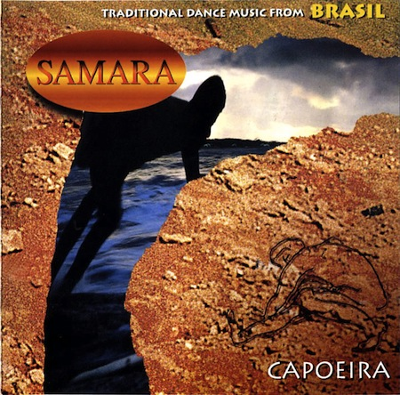

Слова и история песни Camaradinha, от местре Samara с альбома "Capoeira“ (1998)
Camaradinha — одна из самых известных и узнаваемый песен капуэйры. Широкую популярность приобрела после выхода альбома «Capoeira» местре Samara (Claudio Lemos) в 1998 году.

Альбом является частью серии музыки народов мира «Axis Mundi World healing music» нидерландского продюсера и музыканта Берта Бартена (Bert Barten). В этой серии местре Samara представлял Бразилию.
Сам Местре Samara с 1987 года преподаёт в основанной им же Escola Senzala de Capoeira Amsterdam (Нидерланды). Подробности о нём читайте на сайте albazilla.com и на его официальном сайте.
Текст песни Camaradinha смотрите ниже, но тут лучше один раз услышать, чем сто раз прочитать :) Ещё всех приглашаю в мой блог на Capoeira.in, там я стараюсь публиковать много чего интересного.
Текст песни Camaradinha
La lauê la lauê lauê capoeira…
Припев: La lauê la lauê lauê capoeira…
Eu quero ver
Припев: Camaradinha
O seu gingado
Camaradinha
O ginga pra mim
Camaradinha
Eu gingo proce
Camaradinha
E daqui pra li
Camaradinha
E daqui pra la
Camaradinha
Daqui vem pra qui
Camaradinha
Oi que eu quero ver
Camaradinha
O de la pra ca
Camaradinha
O di ca pra ali
Camaradinha
Dali pra ca
Camaradinha
Entra que eu saio
Camaradinha
Eu saio e tu entra
Camaradinha
A que eu quero ver
Camaradinha
Bem abaixadinho
Camaradinha
Um jogo Mandinga
Camaradinha
O daqui para la
Camaradinha
Oi que eu quero ver
Camaradinha
Bem malandreado
Camaradinha
Que eu quero ver
Camaradinha
Oi seu gingado
Camaradinha
Oi ginga pra mim
Camaradinha
Eu gingo procê
Camaradinha
E que eu quero ver
La lauê la lauê lauê capoeira…
La lauê la lauê lauê capoeira…